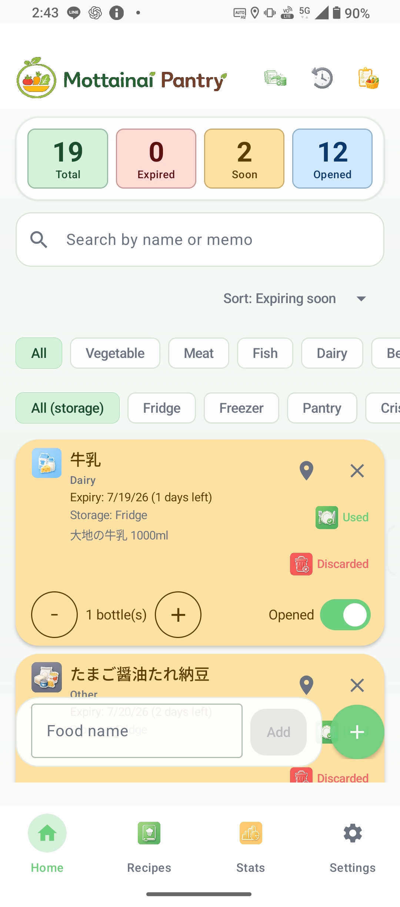
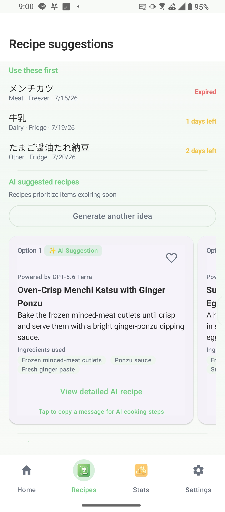
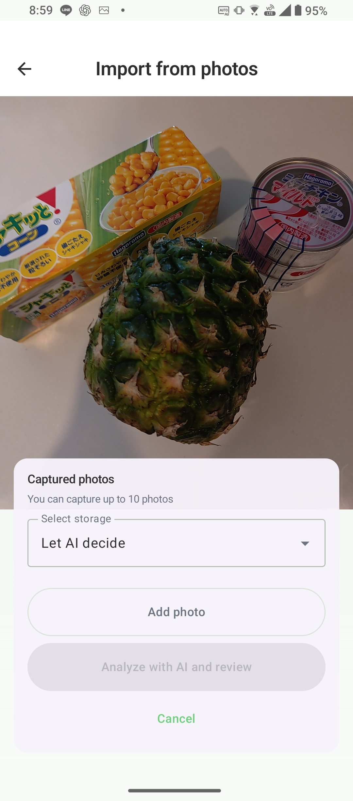
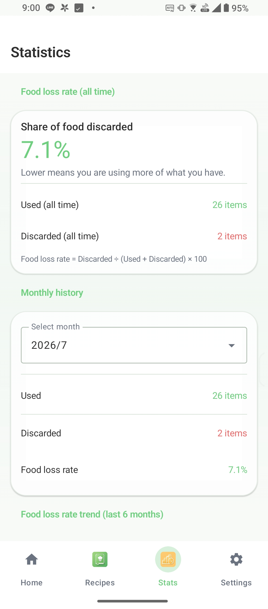

Use your food well, down to the last bite.
An Android app that makes household food management approachable and helps reduce food waste.
Food inventory
Home is the main dashboard for registering, editing, consuming, discarding, and restoring items. Pin frequently used ingredients and organize them with units and categories.
Faster registration
Add a food name quickly from Home, use barcode lookup, or scan best-before dates with OCR. You can always review and correct results before saving.
Recipes and planning
Create AI-assisted recipe ideas with ChatGPT or Gemini, save recipes, manage a shopping list, and record ingredients you want to avoid.
Statistics and backup
Review food-loss trends, open matching food from statistics, and protect your local data with CSV tools and backup and restore.
Screenshots

Manage your pantry at a glance.

Generate recipes from ingredients expiring soon.

AI recognizes multiple food items from a single photo.

Visualize your food loss.